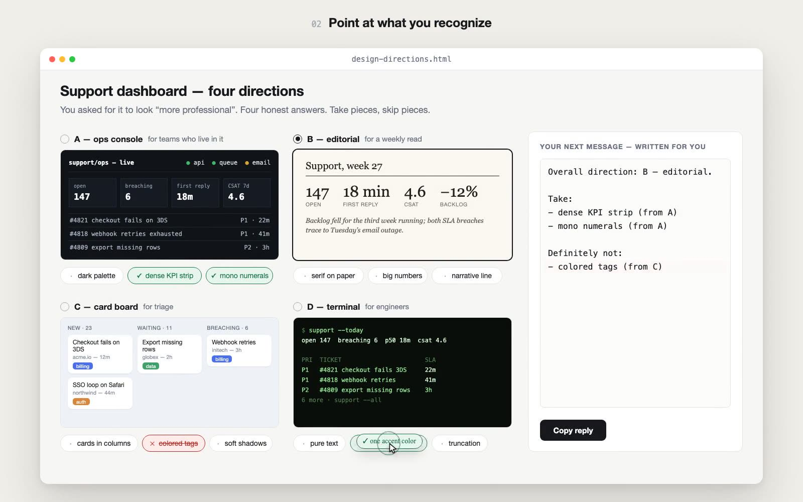
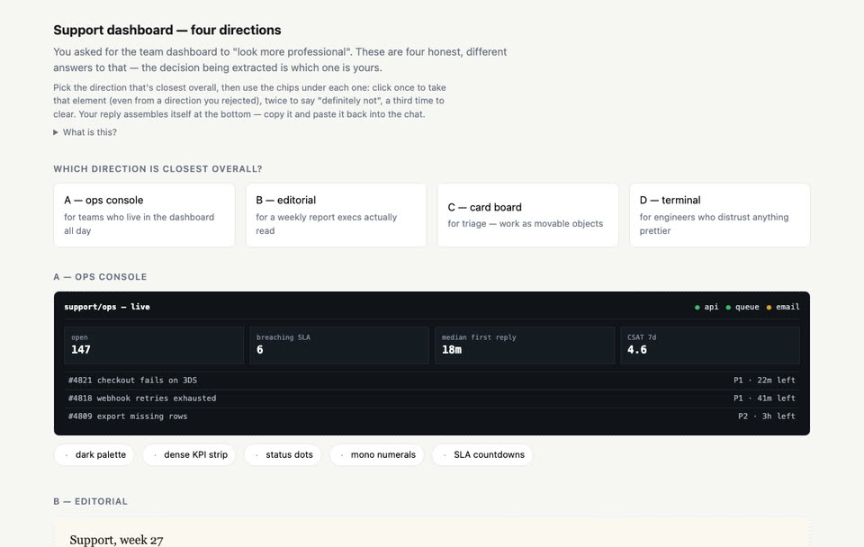
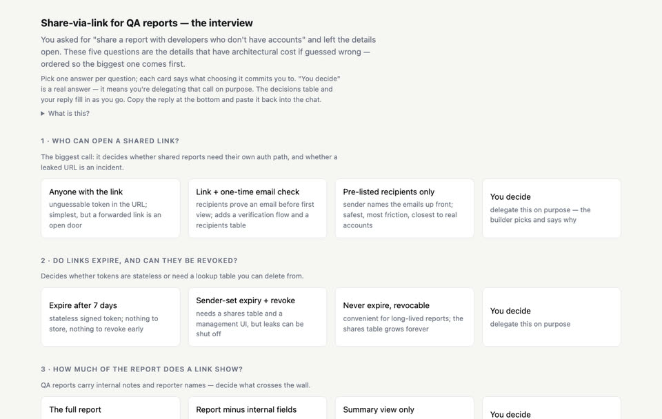
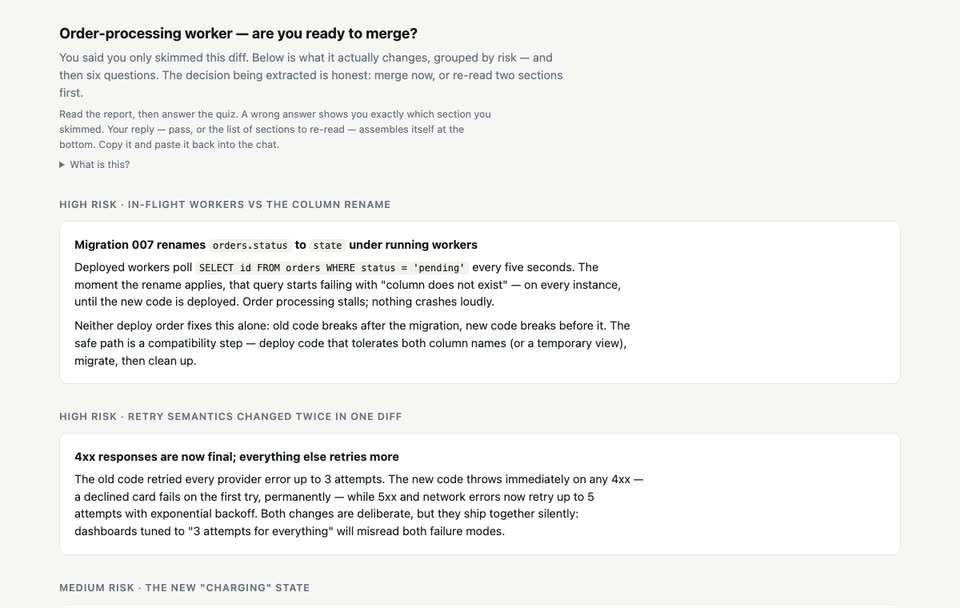

People can’t describe what they want. They recognize it instantly.
A Claude Code skill for prompts that aren’t specs yet. Instead of guessing, Claude builds a small interactive page: you point at what you like, and the page writes your next prompt for you.

The loop
Render
Claude spots the unknown and builds one self-contained HTML page: options, mocks, questions, a quiz.
Point
You click what you recognize. Take a piece, skip a piece, pick an answer, move a slider.
Paste
The page assembles your reply as you go. Copy it into the chat, or send it directly where the host allows.
Build
Claude builds against decisions you made, and saves them to .unknowns/decisions.md so nothing is asked twice.
Click through the real thing

Four design directions
“Make the dashboard look more professional.” Four honest answers; take and skip pieces until a fifth assembles itself.
Open example
The interview
“Add share-via-link, you decide the details.” Five questions ordered by architectural blast radius.
Open example
Quiz me before I merge
“I only skimmed the diff.” A risk-grouped report, then six questions; wrong answers point at what you skimmed.
Open exampleEleven techniques, one loop
Before building
- Blindspot passwhat you couldn’t know to ask
- Teach me my unknownsvocabulary for taste you can’t name
- Four design directionscompose a fifth from parts
- Mock before you wireplacement and interaction, cheaply
- Brainstorm on an effort axisquick wins to quarter-long bets
- The interviewdecisions by blast radius
- Point at a referenceprove you understood it first
- The tweakable plansorted by what you’ll change
During
- Implementation notesplan versus reality, logged as you go
After
- The buy-in docobjections answered before review
- Quiz me before I mergedo you know your own diff?
It knows when to stay out of the way
Stated defaults
Cheap to redo, or nobody there to answer. Claude lists its assumptions in a line and builds.
A question in chat
One to three independent questions settle it. No page needed.
An artifact
The answer has to be seen to be chosen, or there are many questions that depend on each other.
Install
/plugin marketplace add droppedoutofcontext/finding-unknowns /plugin install finding-unknowns@finding-unknowns
git clone https://github.com/droppedoutofcontext/finding-unknowns cp -r finding-unknowns/skills/finding-unknowns ~/.claude/skills/
Then just work. The skill triggers on vague or high-stakes requests, or when you ask “what am I missing?”, “interview me”, or “quiz me before I merge”.